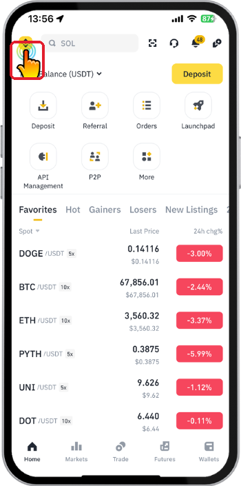
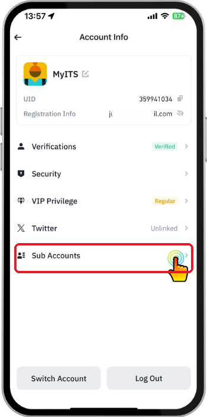
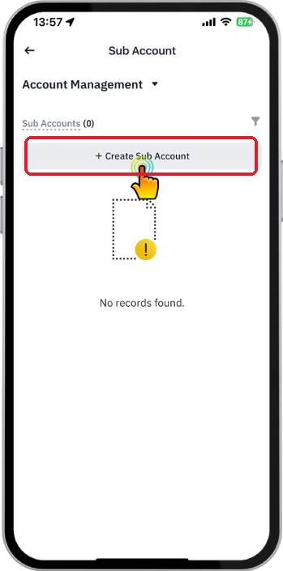
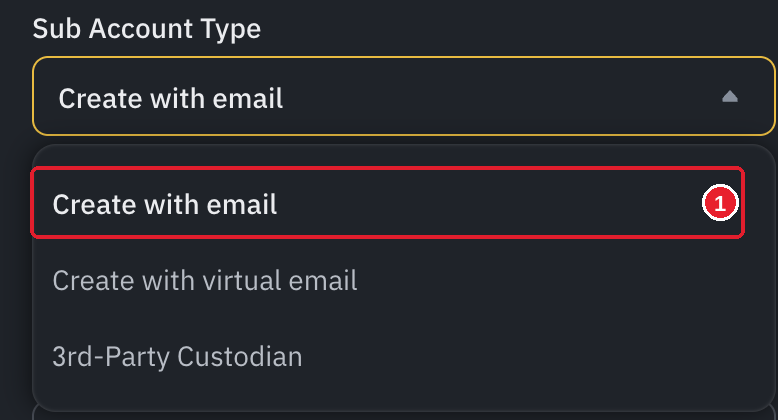
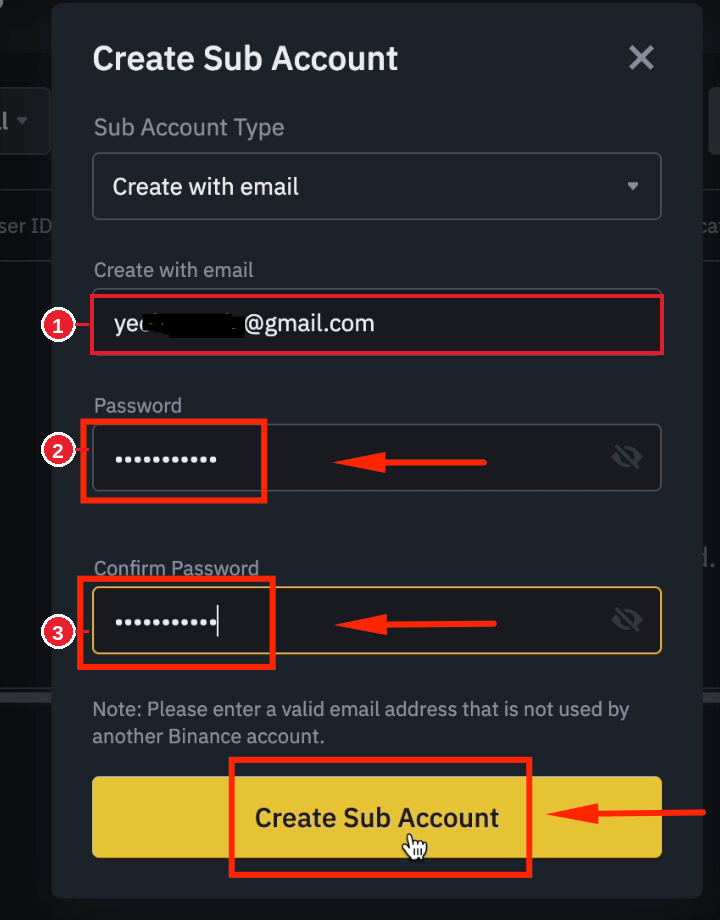
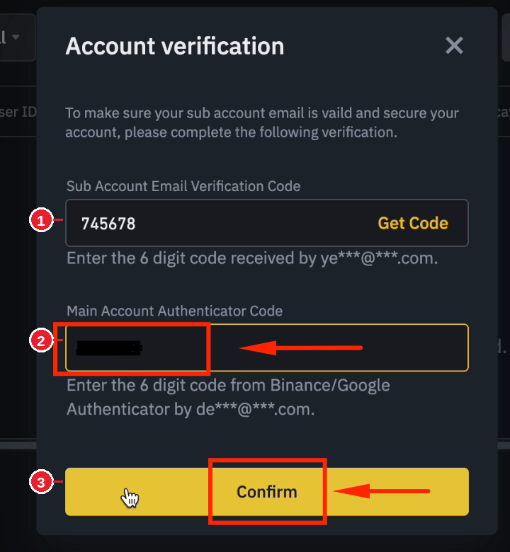
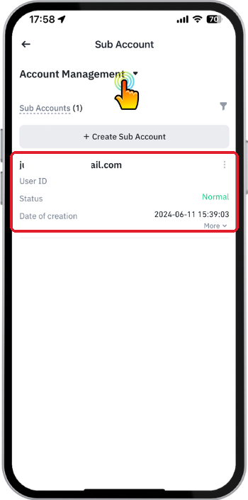
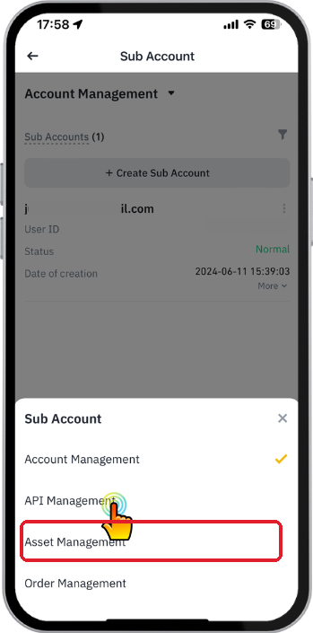
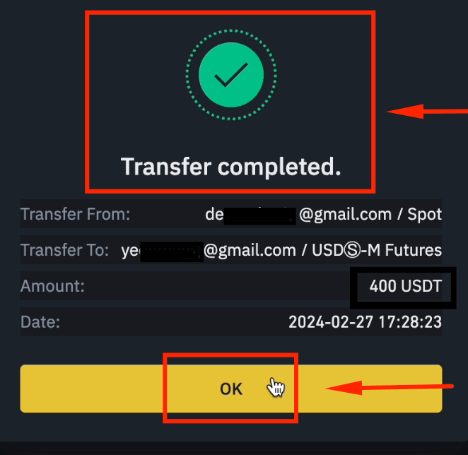

휴대폰 앱에서 9단계 · 약 10분
그림 속 빨간 박스를 그대로 눌러요
서브 계정(Sub-account)은 내 주계정 아래에 하나 더 만드는 ‘작은 계정’이에요. 돈을 따로 보관하거나, 거래를 나눠서 할 때 써요. 서브 계정은 따로 회원가입하는 게 아니라 주계정에 붙는 계정이라서, 본인 인증도 주계정 것을 그대로 써요.
하나라도 빠지면 중간에 막혀요. 먼저 확인해요.
위에서부터 순서대로 하면 돼요. 1~7단계가 ‘만들기’, 8~9단계가 ‘돈 옮기기’예요.

앱을 열면 맨 윗줄 왼쪽에 동그란 사람 모양 아이콘이 있어요. 그걸 눌러요.

내 사진과 UID, 인증 상태가 보이는 화면이에요. Verifications(인증)이 Verified 인지 확인하고, 목록의 마지막 Sub Accounts (서브 계정) 를 눌러요.

Sub Account 화면이 열려요. 위쪽 Account Management (계정 관리)
가 선택된 상태에서, 회색 버튼 + Create Sub Account (서브 계정 만들기) 를 눌러요.
처음이라 “No records found.” 라고 나오는 게 정상이에요.
버튼이 안 보이면 맨 아래 ‘꼭 알아둘 점’을 먼저 봐요.


다 적었으면 맨 아래 노란 Create Sub Account 버튼을 눌러요.


Account Management 목록에 방금 만든 계정이 보여요. 이메일, User ID, Normal 상태, 만든 날짜를 확인해요.
새로 만든 서브 계정은 잔액이 0이에요. 필요한 만큼 옮겨요.

Sub Account 화면 위쪽 Account Management ⌄ 를 누르면 메뉴가 열려요. 거기서 Asset Management (자산 관리) 를 골라요.

Transfer (이체) 를 누르고 보내는 계정 → 받는 서브 계정 → 코인 → 수량 순서로 고른 뒤 확인해요. 주계정과 서브 계정 사이 이체는 수수료 0원, 바로 들어가요.
서브 계정은 스스로 출금하거나 다른 계정으로 보낼 수 없어요. 돈은 꼭 주계정에서 옮겨요.
본인 인증을 같이 쓰기 때문에, 서브 계정으로 규칙을 어기면 주계정도 위험해져요. 모르는 사람에게 서브 계정을 넘기지 마세요.
PC나 휴대폰 브라우저로 binance.com 에 로그인 → 프로필 → Dashboard → Sub Accounts → Account Management 에 들어가면 똑같은 버튼이 있어요. 처음 한 번은 웹에서만 만들어야 하는 계정도 있어요.
아니요. 주계정의 인증을 그대로 써요. 대신 서브 계정으로 처음 로그인할 때 이메일 확인을 한 번 해요.
Create with email로 만들었다면 네. 그 이메일과 비밀번호로 로그인해요. 가상 이메일로 만들면 로그인이 안 되고 API로만 쓸 수 있어요.
Asset Management › Transfer 에서 보내요. 수수료가 없고 바로 들어가요. 반대 방향도 같은 방법이에요.
일반 개인 계정은 5개예요. VIP 등급이 높아지면 개인 계정은 최대 30개, 기업 계정은 최대 200개까지 늘어나요.